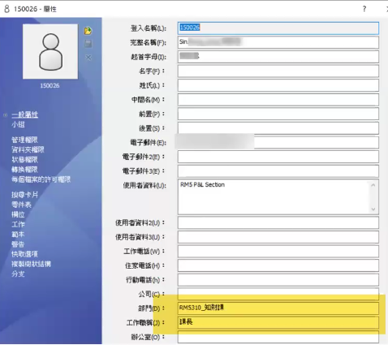
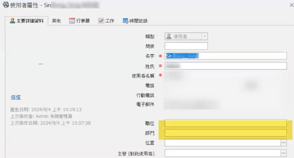

PDM属性同步
PDM用户特定属性更新后无法同步到MANAGE用户
新用户首次同步可映射特定属性
Manage中已存在的用户，PDM用户属性再次更新，无法同步映射更新内容
 通过SQL脚本来更新
参考 KB QA00000124304(email示例)
修改成映射更新“部门”和“职位”示例
1 | UPDATE ShManage数据库.dbo.UsersAndGroupsSET Position=t2.Title,Department=t2.DepartmentFROM ShManage数据库,dbo.UsersAndGroups t1 |